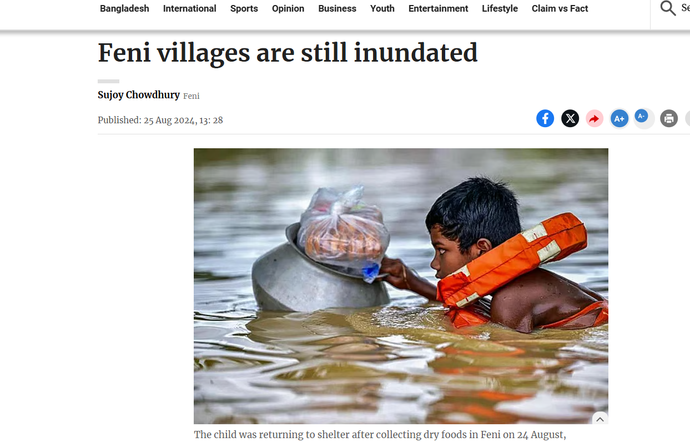
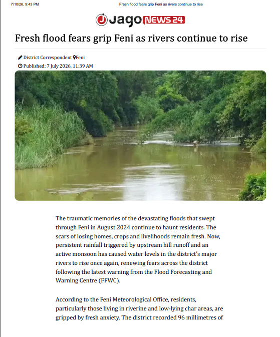
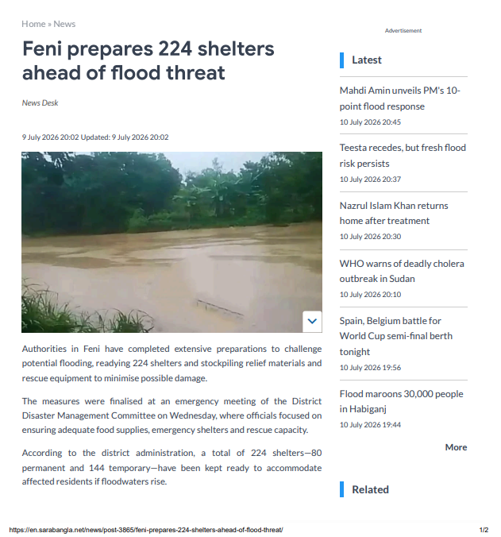
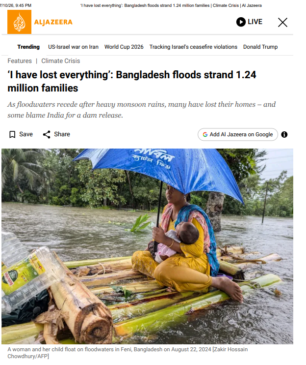
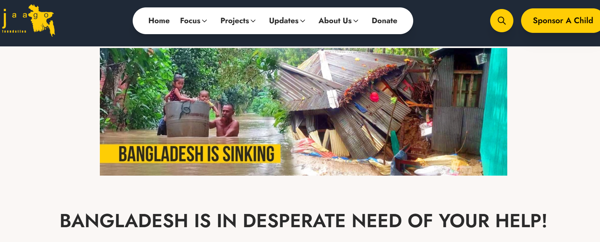
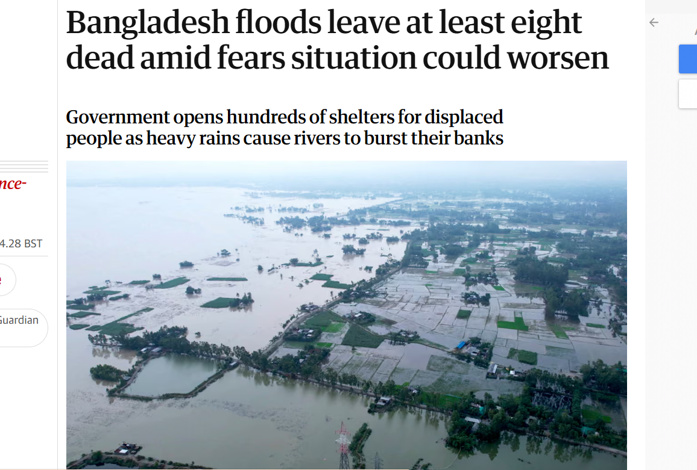
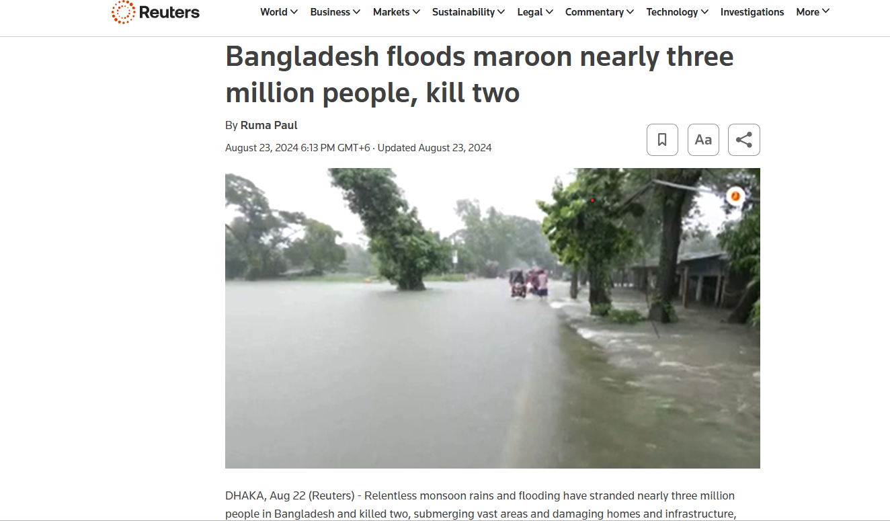
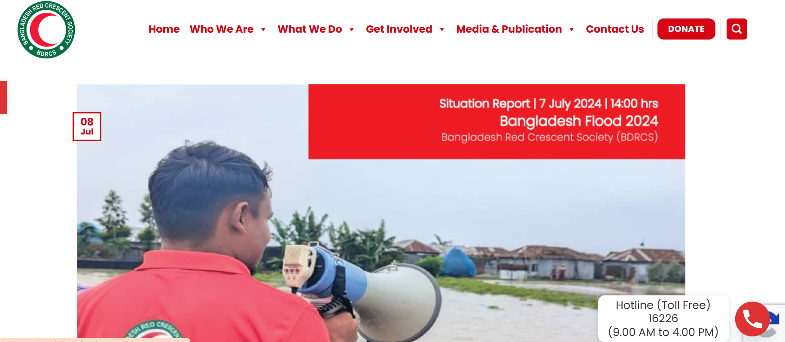
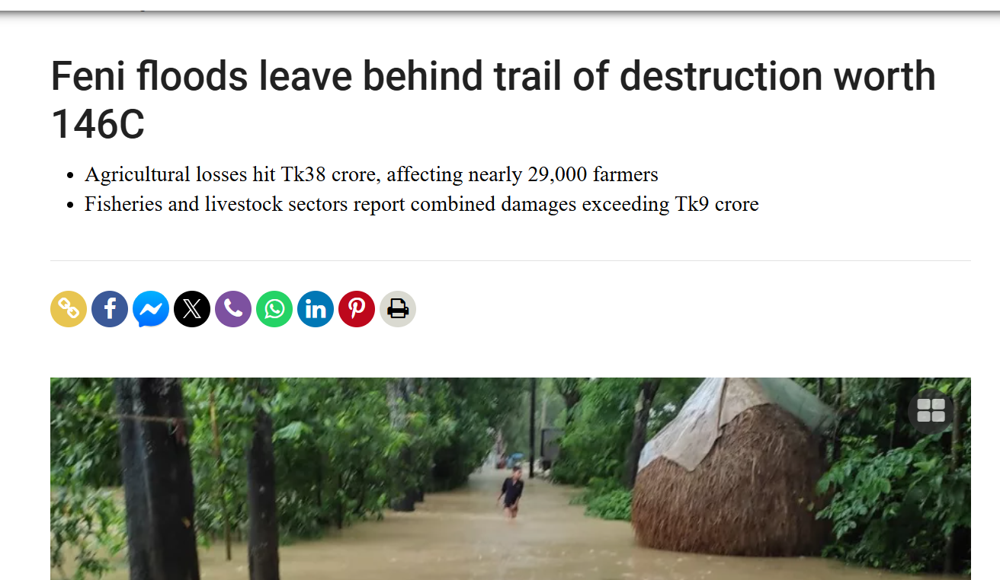
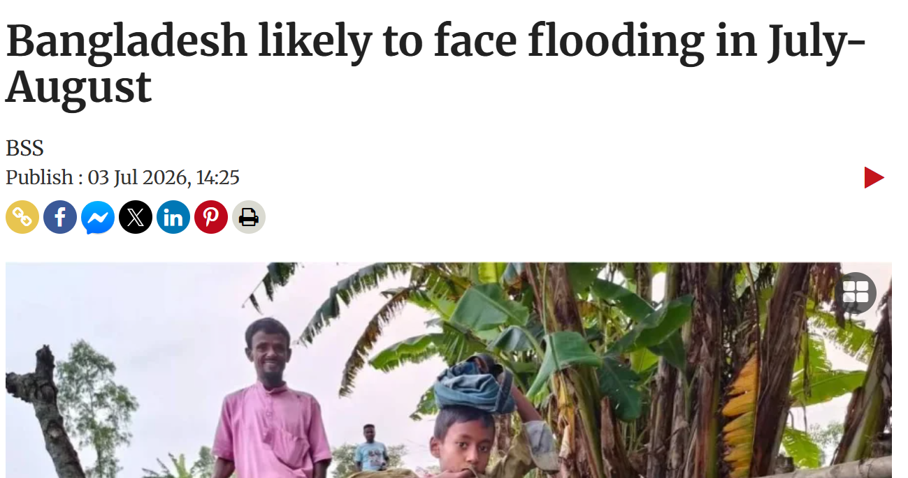

Newspaper Clippings
The Flood as Documented by the Press

Feni Villages are Still Inundated

Fresh flood fears grip Feni as rivers continue to rise

Feni prepares 224 shelters ahead of flood threat

I have lost everything

Floods Devastate Bangladesh

Eight dead, two million affected by Bangladesh floods

Bangladesh floods maroon nearly three million people

Situation Report: Bangladesh Flood 2024 (BDRCS)

Feni floods leave behind trail of destruction worth 146C
